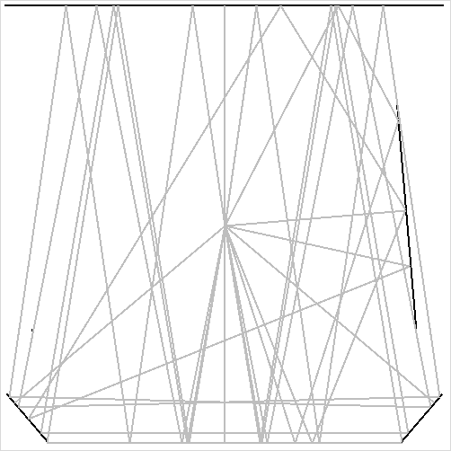

Notes on Laser Tag
Images after the first three from the sample data
4
5
6: 261-279 gives lowest apparently horizontal segment: actually bounces off of bottom mirror.
data sets 7-10 have these mirrors + additions to barely let some of these past or barely block some.
7 blocks blocks 98-281 (further left bounce at top above) and
don't see tiny part at bottom blocking 261-279 slight bottom
bounce
8 slightly block 98-281, 260-280, clearly block 82-259
9 barely lets 98-281, 82-259 pass

10 barely contain 260-280, 261-279, clearly kills 98-281, 82-259
11: direct reflections at 90 degrees off one mirror and a
fraction of a degree < 90 off the other -- should not get 90
repeated twice.
12: obstruct one direct reflection
13: direct reflection, barely negative angle, should show as 0, not 360.
14: the one mirror does not extend far enough